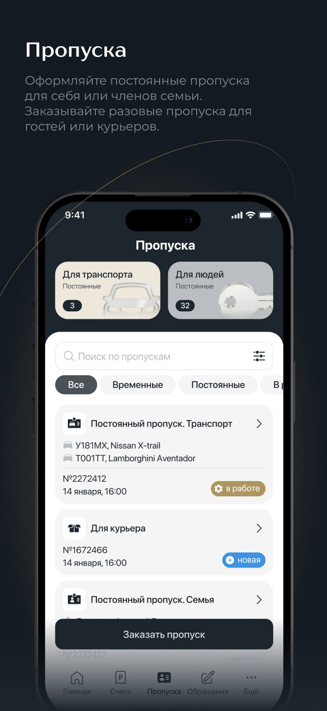
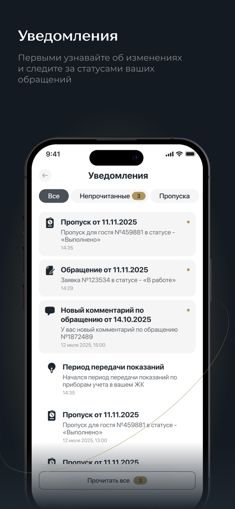

Акцент: синий или оранжевый
Одни и те же элементы главной в трёх вариантах. Выделение показано сразу, без наведения. Переключайте вариант кнопками или клавишами 1, 2, 3; тему — клавишей T.
1 · Первый экран
Сейчас подчёркивание серое и почти не видно. В оранжевых вариантах акцент подсказывает, что слова живые. Наведите на слово.
Проектирую продукты,
системы и команды
Senior / Lead продуктовый дизайнер, 10+ лет в Web, iOS и Android. Играющий тренер: сам проектирую ключевые сценарии и дизайн-систему — и помогаю команде расти.
2 · Сцена кейса: выделение и расстояние
Рамка — акцент. В оранжевых вариантах расстояние рисуется пунктиром цветом сцены, иначе красная направляющая сольётся с оранжевой рамкой.


3 · Нижнее меню
Сейчас активный пункт — чёрная плашка. В оранжевых вариантах — точка акцента, плашка уходит.
4 · Цифры результата и фокус
Цифры Comfort — акцентом. Ссылки остаются монохромными; кольцо фокуса с клавиатуры — акцентом.
Образец: цифра результата Comfort
Образец: пользователи приложения
Образец: скорость ответа
Контраст в текущей теме
Для рамок и точек нужно от 3:1 к фону. Для подписи размера (11px) — от 4,5:1 к акценту.
| Вариант | Акцент | Рамка к фону | Рамка к сцене | Подпись на плашке |
|---|